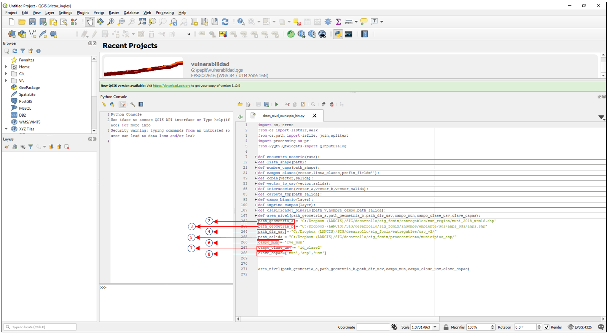
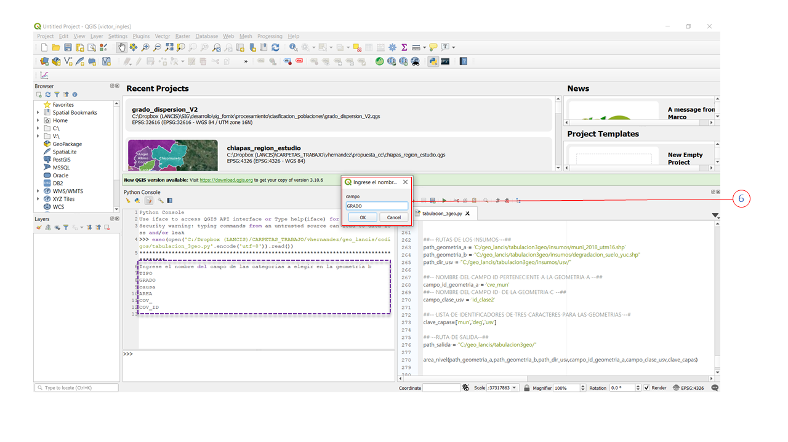
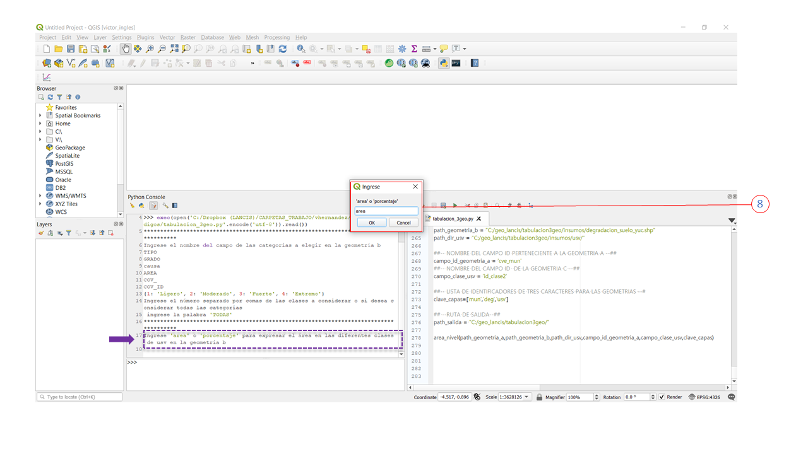

Tabular intersección entre 3 geometrías¶
Calcula la intersección de 3 capas y realiza una tabulación cruzada del área
La capa A es al nivel geográfico que se reporta La capa B es el nivel geométrico intermedio del cual se cuantifica el área total perteneciente a la entidad A y se cuantifica el área por clase de USV. La capa C es la serie de uso de suelo y vegetación de INEGI
Requerimientos generales¶
Para asegurar la ejecución correcta del código es importante verificar la instalación y funcionamiento de los siguientes elementos:
- Qgis 3.4 o superior
Descargar el código de ejemplo
Requerimientos generales de los insumos¶
Es importante que todas las capas vectoriales cumplan con las siguientes condiciones:
- Misma proyección cartográfica
- Sin problemas topológicos
Entidad A¶
- Que cuente con un campo que contenga un identificador único para cada geométria
Entidad B¶
- Que cuente con un campo dónde se especifiquen las categorias o clases
Entidad C¶
- Que cuente con un campo que contenga el número de clase correspondiente
- Que el campo mencionado en el inciso anterior se llame igual para todas las series
Ejemplo¶
Datos de prueba¶
Descargar los datos de prueba para este ejemplo aqui
| insumo | Descripción |
|---|---|
| muni_2018_utm16.shp | Capa de municipios del estado de Yucatán, esta capa representa la entidad A |
| degradacion_suelo_yuc.shp | Capa de áreas de degradación del suelo clasificadas en ligero, moderado, alto y extremo, esta capa representa la entidad B |
| usv/ | Directorio que contiene capas de USV de las 6 series de INEGI para el estado de Yucatán, estas capas representan la entidad C |
Abrir el código¶
Abrir el código tabulacion_3geo.py en Qgis 3.4 o superior, Para resolver cualquier duda al respecto, consultar la guia
1. Indicar la ruta de los insumos¶
Indicar la ruta completa de los insumos según corresponda:
Advertencia
verifica que se use “/” como separadador de espacio en lugar de “'
path_geometria_a = 'C:/geo_lancis/tabulacion3geo/insumos/muni_2018_utm16.shp'
path_geometria_b = "C:/geo_lancis/tabulacion3geo/insumos/degradacion_suelo_yuc.shp"
path_dir_usv = "C:/geo_lancis/tabulacion3geo/insumos/usv/"
2. Indicar los nombres de los campos id¶
Para la geometría A se declara el nombre del campo identificador o clave
campo_id_geometria_a = 'cve_mun'
Nota
El nombre del campo para la geometría B se preguntará más adelante por medio de una ventana emergente. ver paso 6
Para la geometría C se declara el nombre del campo el cúal contiene el identificador de clase para las series de USV
campo_clase_usv = 'id_clase2'
4. Agrega identificadores según el tipo de geometría¶
En la variable clave_capas agragar un identificador para cada una de las categorias de tres caracteres.
clave_capas=['mun','deg','usv']
4. Indica el directorio de salida¶
En esta ruta se escribirá la tabla resultado de la cruza adicionalmente se crea una carpeta llamada tmp en la cúal se almacenán las cruzas ralizadas en el proceso.
path_salida = "C:/geo_lancis/tabulacion3geo/"
5. Ejecuta el script¶
Hacer clic en el botón de ejecutar y permanece atento a la consola.
6. Ingresa el nombre del campo identificador de la geometría B¶
Se mostrará en la consola la siguiente instrucción:
Ingrese el nombre del campo de las categorias a elegir en la geometría B
enseguida del nombre de todos los campos que tiene la capa, escriba en la ventana de texto el nombre del campo tal cual se muestra en la consola, para este ejemplo el campo que sirve como identificador es GRADO una vez escrito hacer clic en OK
7. Ingresar el número de las categorías a considerar¶
El script permite ingresar todas las categorías o solo algunas, las categorias indicadas serán reclasificadas como binario donde 1 es que fue considerada y 0 cero que no, posteriormente realiza una limpieza de la capa eliminando las geométrias con la categoria 0, una vez finalizado ese proceso, realiza la cruza solo con las categorias consideredas.
Ingrese las categorias que desea considerar conforme se muestra en la consola, para este ejemplo solo consideramos las categorias “Moderado”, “Fuerte” y “Extremo”, por lo cual en la ventana que se muestra se escribe: 1,2,4, una vez escrito dar clic en OK
Nota
puede ingresar solo una categoria escribendo por ejemplo: 1,
Puede ingresar todas las categorias escribiendo la palabra «TODAS»
8.- Elegir entre área o porcentaje¶
La cuantificación de las categorias de USV en el área de la geometría B perteneciente a una identidad de la geometría A, puede expresarse en área (hectáreas) o en porcentaje. para este ejemplo se elige “area”
